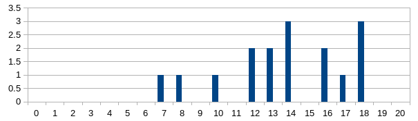

Info
- Kontakt: blazeva1 (na) fit.cvut.cz
- Konzultace: Po domluvě
- Kde mě najdete: NB 341b, či doktorandská místnost A-1246 (bývalé respirium)
Odkud se učit
- body za aktivitu dostanete za předvedení správného řešení úlohy u tabule, nebo odevzdání úkolu z minulého cvika na papíře (vše je za 1 bod, max je 5 bodů za semestr)
- Body máte zapsané na stránce klasifikace ↗.
12. cvičení 14.5.2018
- Nakreslete K_5, K_7 jedním uzavřeným tahem. Které K_n jdou nakreslit jedním tahem, a jak?
- Seven Bridges of Königsberg – je možné projít všechny mosty právě jednou a vrátit se zpátky na začátek? Kolik mostů je potřeba přistavit, aby to šlo?
- Graf se čtyřmi vrcholy lichého stupně lze pokrýt dvěma otevřenými tahy alespoň dvěma různými způsoby.
- Jak implementovat algoritmus pro hledání uzavřeného eulerovského tahy v O(m+n)? Implementace pomocí DFS
- Hledání uzavřeného eulerovského tahu ve vyváženém a souvislém orientovaném grafu.
- Určete cyklomatické číslo grafu K_n, K_{n,m} a mřížky m x n.
další úkoly
- Ukažte, že duál souvislého rovinného grafu je bipartitní, právě tehdy když původní graf je eulerovský.
- rozhodněte, jestli existuje hamiltnovská kružnice v grafu $K_{6,8}$ či $K_{3,4,8}$? Dále najděte souvislý 3-regulární graf bez hamiltonovské kružnice.
- Rozhodněte pro jaká n lze koněm proskákat (a vrátit se na začátek) šachovnici o rozměrech $4 \times n$. A co šachovnice o velikosti $L \times L$ kde $L$ je liché číslo?
11. cvičení 7.5.2018
- (a,b)-strom – vkladani, mazani, predchudce, merge
- nalezení všech (2,4)-stromů reprezentující množinu {1,2,3,4,5,6}
- vložte do prázdného (2,4)-stromu prvky: F; S; Q; K; C; L; H; T; V; W; M; R; N; P; A; B; X; Y; D; Z; E.
- pokud jsou prvky (a,b)-stromu A mensi nez stromu B, jak provest merge ve slozitosti O(h) – hloubka vyssiho ze stromu
- c-univerzalni system hesovacich funkci, jak vypada pro c=0
úkoly do příště
- jak se mění struktura (2,3)-stromu při vkládání prvků 1,2,…,n ? jaká je jeho hloubka v každém z kroků?
- jak naimplementujete fci, co ve (2,3)-stromě najde medián v (log n)? popište případné úpravy stromu
10. cvičení 30.4.2018 (zápočtový test)
V testu bude látka ze všech předchozích cvičení. Obsahem jednotlivých úloh budou hlavně úlohy ze seznamu níže. Úlohy mohou být mírně upravené či mohou být zadány jinak, avšak jejich řešení využije stejné principy jako původní úloha.

9. cvičení 23.4.2018 (látka 8. cv.)
- Příklady na duál grafu, nezávislost, klikovost a barevnost grafů.
- Jak se tyto vlastnosti mění při přidání jedné hrany.
- Pro každý graf platí $\alpha(G) \geq \frac{|V|}{\chi(G)}$
- vztah mezi |V| a $\alpha(G).\omega(G)$
- Pro každý graf platí $\chi(G)(\chi(G)-1) \leq 2|E|$.
- Hyperkrychle je bipartitní.
- First Fit (FF) algoritmus barvení
- FF funguje občas docela špatně – obarví bipartitní graf bez párování pomocí N barev.
- Pro každý graf existuje posloupnost vrcholů taková, že FF skončí s optimálním obarvením.
- Implementace FF v O(n+m)
úkoly do příště
- Nechť G=(V,E) je souvislý rovinný graf, T hrany nějaké jeho kostry a G’=(V’,E’) je duál nějakého nakreslení G. Ukažte, že hrany $T’ \subseteq E’$ odpovídající hranám E \ T původního grafu, tvoří kostru duálního grafu.
8. cvičení 16.4.2018 (Tomáš Valla) (látka 9. cv.)
- Výpis nejkratší cesty ve FW.
- FW algoritmu stačí pouze jedna matice.
- Fibonacciho haldy
- Dolní odhad zložitosti extract min FH.
- Nejbezpečnější cesta a úloha se směnárnou.
- Hloubka stromu ve FH je Omega(N).
7. cvičení 9.4.2018
- rovinnost, definice vrcholů, oblouků, stěn (pomocí obloukové relace a jejich ekvivalenčních tříd)
- $K_5$ bez hrany a $K_{3,3}$ bez hrany jsou rovinné
- Nerovnosti s použitím Eulerovi formule |E| <= 3|V|-6; pokud nemá trojúhelníky |E| <= 2|V|-4.
- Každý rovinný graf bez trolúhelníků má vrchol stupně max 3.
- Rovinnost 3D a 4D hyperkrychle, minory, zmínka K_5 a K_3,3 je minor G je ekvivalentní G není planární.
- Obecná eulerova formule: 1+c=v-e+f
- Počet vrcholů v grafu s minimálním stupněm 5 je 12.
- Zakreslení K_5, K_6, K_7 na toroid.
úkoly do příště
- dokažte, že rovinný graf G lze do roviny zakreslit bez křížení hran je ekvivalentní s tím, že G lze na sféru zakreslit bez křížení hran
- úložka na Ahmedovi Battle for Silver ↗ (poděkujte Tungovi)
6. cvičení 26.3.2018
- Mějme pole plné svišťů. Za každého sviště je na poli díra pro jednoho sviště. Nad polem se objevil orel a svišti se začali rozutékávat do děr. Pokud je rychlost sviště 1 m/s a orel slétne za T sekund, kolik svištů může být v tu chvíli v bezpečí? Co když díra pojme S svišťů? Kolik nejméně času potřebuju na záchranu všech svišťů?
- Pokrytí děravé šachovnice dominem.
- Pokrytí děravé šachovnice věžmi tak, aby se neohrožovaly (co když se věže přes díry neohrožují).
- Ukažte, že perfektní párování v 3-regulárním grafu obsahuje všechny mosty.
- Lidé čekají na poště na nějaké služby. Každý zákazním může jenom k některým okénkům, protože každé okénko obsluhuje pouze některé požadavky. Za jaký minimální čas je možné všechny obsloužit.
úkoly do příště
- Pro n > 3 různých množin A_1 , … , A_n kde |A_i|=n-3, kde sjednoceni všech A_i je X, |X|=n, dokažte, že množiny A_i mají systém různých reprezentantů.
5. cvičení 19.3.2018
- Hranová i vrcholová souvislost je zhora omezená nejmenším stupněm grafu.
- Graf může mít h. i v. souvislost menší, než je jeho nejmenší stupeň.
- Důkaz, že úplný graf s odebranou kružnicí je (n-3)-souvislý.
- Elementární algoritmus hledání stupně hranové a vrcholové souvislosti grafu.
- Důkaz, že pro hledání hranové souvislosti nemůsíme pouštět toky mezi všemi dvojcemi vrcholů, ale stačí mezi jedním vrcholem a všemi ostatními (zryhlení asymptoty o N)
- Z vrcholů v inkluzi minimálním vrcholovém řezu vedou hrany do všech komponent, které vzniknou jejich odebráním.
- Dvojice vrcholů graf může mít více disjunktních cest, než je souvislost grafu.
-
- 3-regulární graf G má vercholovou souvislost stejnou jako hranovou souvislost.
úkoly do příště
- Dokažte, že po připojení nového vrcholu ke K-souvislému grafu K hranami zůstane graf K-souvislý.
- Problém F - Flame of Nucleus ↗, pošlete mi username, Accept budu kontrolovat zde ↗.
4. cvičení 12.3.2018
- definice sítě, toku, řezu, kapacity řezu, zlepšující cesty
- rozdíl mezi řezy (odděluje zdroj a stok), elementárními řezy (daný přechodem z množiny A do B) a v inkluzi minimálními řezy (nelze odebrat hrana řezu, aby zůstalo řezem)
- Dokažte, že zadaný řez je v inkluzi minimální.
- Pro dvojici protichůdných hran (u,v) a (v,u) existuje maximální tok, kde f(u,v) či f(v,u) je 0.
- Najděte graf, který má více minimálních řezů, ale dvě hrany nemají stejnou váhu.
- Ford Fulkersonův algoritmus - proč hledáme cestu i proti směru orientovaných hran
- Nalezněte maximální tok / minimální řez grafu.
úkoly do příště
- Nalezněte graf, ve kterém libovolný průběh Ford Fulkersonova algoritmu použije zlepšující cestu vedoucí v protisměru alespoň jedné hrany, nebo dokažte, že žádný takový graf neexistuje.
3. cvičení 5.3.2018
- souvislost 2-souvislosti a uch – sestrojení grafu pomocí přidávání uší
- ve 2-souvislém grafu se stupni >= 3 a s alespoň 4 vrcholy existuje hrana, jejichž odebrání nerozbile 2-souvislost
- algoritmus pro hledání mostů a artikulací
- vrchol v je artikulace <=> všichni jeho sousedi s ním leží na společné kružnici
- v je artikulace <=> leží v průniku alespoň dvou bloků
- algoritmus pro hledání silně souvislých komponent
- existence grafu, kde každý vrchol má nenulový vstupní i výstupní a existuje v něm vrchol, který není na cyklu
- graf má 10 vrcholů a 2 komponenty silné souvislosti, kolik má maximálně a minimálně hran?
- orientujte hrany K_n tak, aby po kondenzaci vznikl graf s h vrcholy
úkoly do příště
- Navrhněte algoritmus, který zjistí, jestli pro každou dvojici vrcholů (u,v) grafu platí, že buďto existuje cesta z u do v, nebo existuje cesta z v do u. Nezapomeňte dokázat správnost a analyzovat
- registrujte se na A2OJ ↗ a UVA ↗, propojte účty a vyřešte: Doves and bombs ↗
2. cvičení 26.2.2018
- procvičení Havlovy věty pro soubory 2,2,3,3,3,4,5 a 1,1,1,2,2,2,3,3,5,8,8,8
- každý graf co je 2-souvislý je i hranově 2-souvislý, ukázka grafu, který je hranově 2-souvislý, ale není vrcholově 2-souvislý
- každý 2-souvislý graf obsahuje kružnici
- (obtížná) Ukažte, že ve 2-souvislém grafu leží každé dva vrcholy na společné kružnici – dukaz pomoci indukce na nejkratsi cestu.
- DFS strom pro neorientovaný i orientovaný graf, stromové, zpětné, příčné a dopředné hrany – graf se dvěma DFS stromy, které mají disjunktní hrany
- bloky grafu, souvislost s mosty a artikulacemi
úkoly do příště
- Dokažte, že ve 2-souvislém grafu leží každé dvě hrany na společné kružnici.
1. cvičení 19.2.2018
- grafy bez stoků či zdrojů; graf s 1 zdrojem Z a 1 stokem S kde není cesta ze Z do S
- důkaz počtu zdrojů a stoků ná náhodně zorientované kružnici
- jak vypadá graf se vstupními i výstupními stupni všech vrcholů = 1
- maximální počet orientovaného grafu s |V| vrcholy
- pro jaká k a n existuje k-regulární graf s n vrcholy, ukažte konstrukci
- je (acyklický) graf s pouze jedním zdrojem i stokem silně acyklický, když přidáme hranu z S do Z?
- co vyjadřují mocniny matice sousednosti
- rychlé mocnění pomocí metody ‘square multiply’
úkoly do příště
- Dokažte, že z každého grafu lze odebrat nejvýše polovinu hran tak, aby byl bipartitní.
- Úspěšně naprogramujte úlohu: Igor and his way to work ↗, a pošlete mi username.